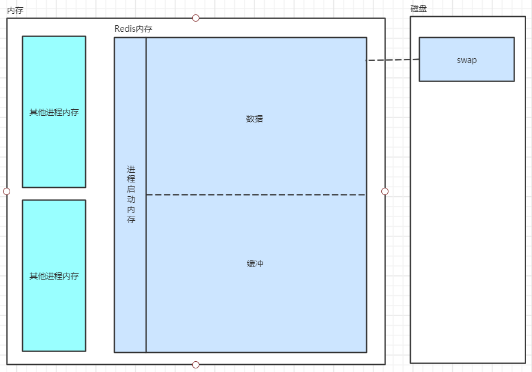

Redis内存模型图

-
进程
Redis在启动时其主进程会占用一定的内存空间，这部分内存大约几M大小，但随着Redis数据量的增大，这部分内存空间占Redis总内存的比例会越来越小，甚至可以忽略。
-
数据
数据是Redis最主要的部分，它主要以键值对的方式进行存储，其中值包括五种类型：字符串、哈希、列表、集合和有序集合。每种类型的数据在Redis内部由不同的内部编码实现。
-
缓冲
缓冲内存包括客户端缓冲区、复制积压缓冲区、AOF缓冲区等；其中客户端缓冲区存储客户端连接的输入输出，复制积压缓冲区用于部分复制功能，AOF缓冲区用于AOF重写时保存最近的写入命令。
-
内存碎片
内存碎片是Redis在分配、回收物理内存过程中产生的，这些内存碎片无法被Redis继续有效的利用，但又占用着内存空间。如果Redis服务器中的内存碎片越来越多，可以通过安全重启的方式减小内存碎片，Redis在重启之后会重新从备份文件中读取数据，在内存中进行重排，从而减少了内存碎片。
-
虚拟内存
在系统内存不足时，Redis会使用虚拟内存，由于虚拟内存的媒介是磁盘，所以其速度会比内存慢很多。
Redis内存统计
使用redis-cli连接Redis，使用info memory查看Redis内存统计
1 | 127.0.0.1:6380> info memory |
-
used_memory
由三部分组成：Redis内存分配器分配的数据内存、缓冲内存、虚拟内存
-
used_memory_human
人性化的展示内存大小
-
used_memory_rss
从操作系统层面统计的Redis已使用的内存，包括数据内存、缓存内存、Redis进程启动内存，但不包括虚拟内存
-
used_memory_rss_human
人性化的展示内存大小
-
mem_fragmentation_ratio
该值表示内存碎片比率，是used_memory_rss与used_memory的比值。mem_fragmentation_ratio一般大于1，且该值越大，代表内存碎片比例越大（在Redis数据量很小时，该值也会很大，但并不代表内存碎片比例大）。mem_fragmentation_ratio小于1时，说明Redis使用了虚拟内存，由于虚拟内存的媒介是磁盘，比内存数据要慢很多，所以当这种情况出现时，要及时排查其原因并及时解决，比如增加Redis节点、增加Redis服务器的内存、优化应用等。
-
mem_allocator
Redis内存分配器，可选项为libc、jemalloc、tcmalloc，默认为jemalloc